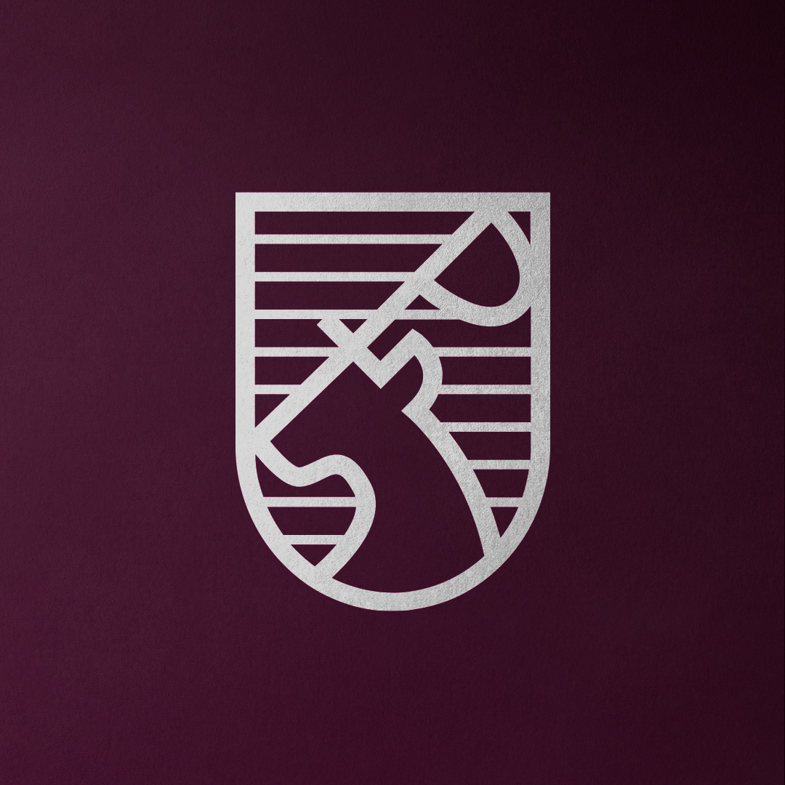
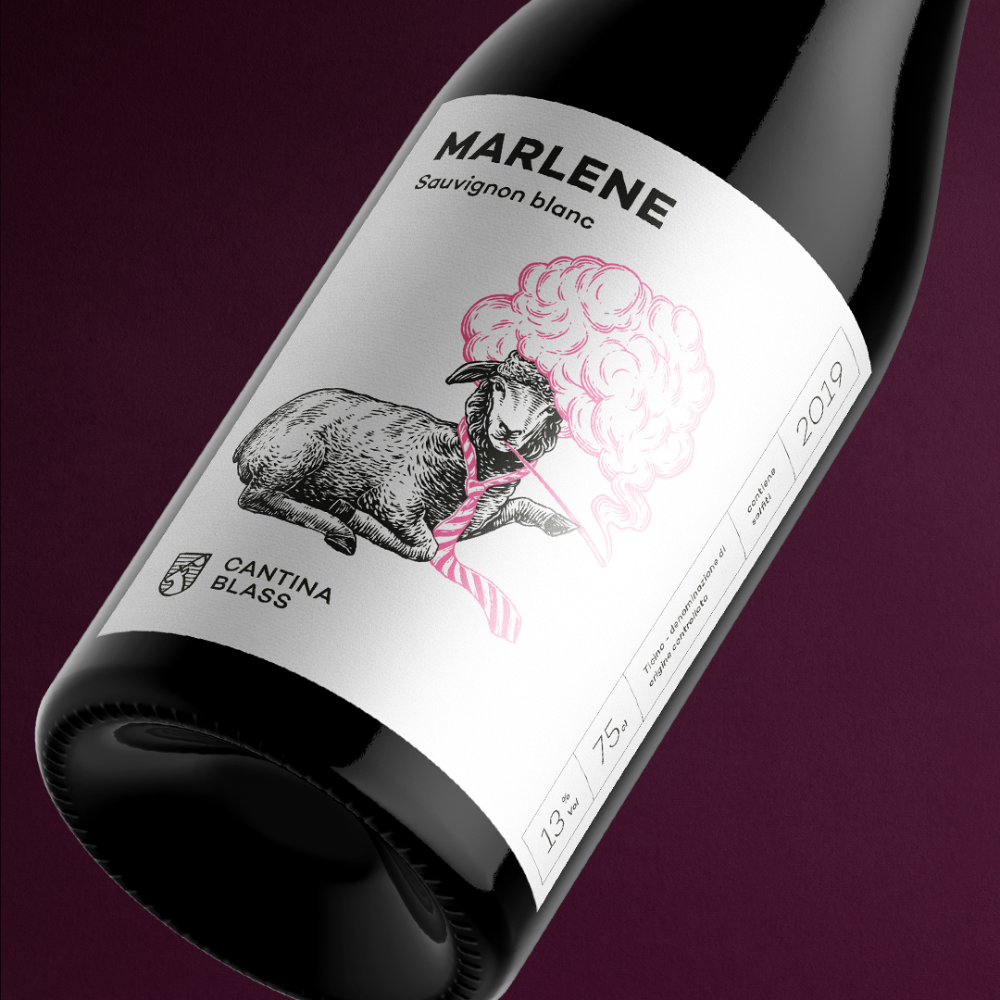
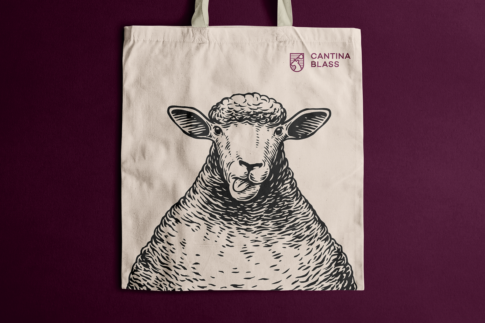
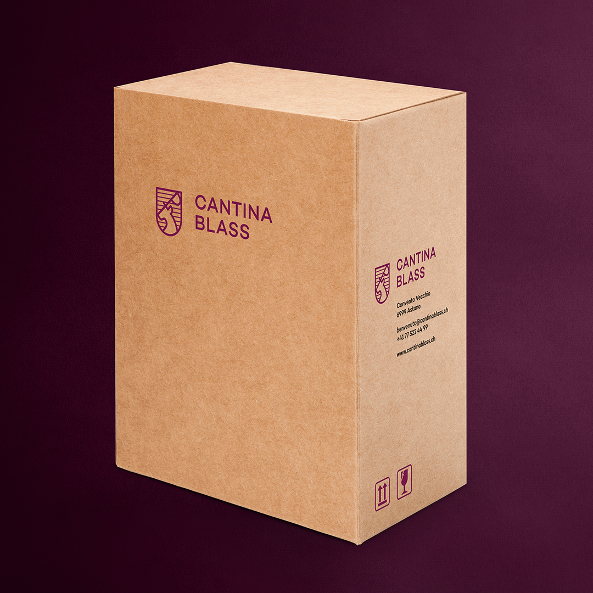
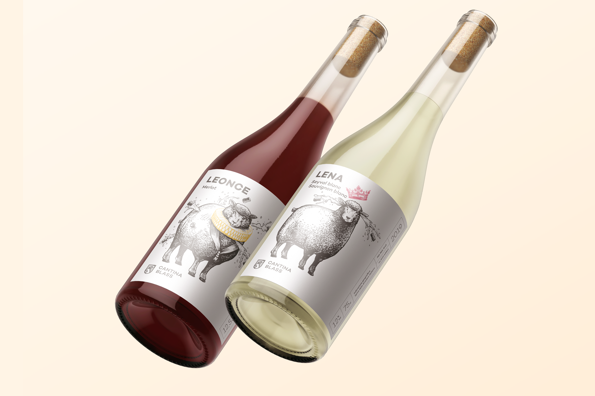
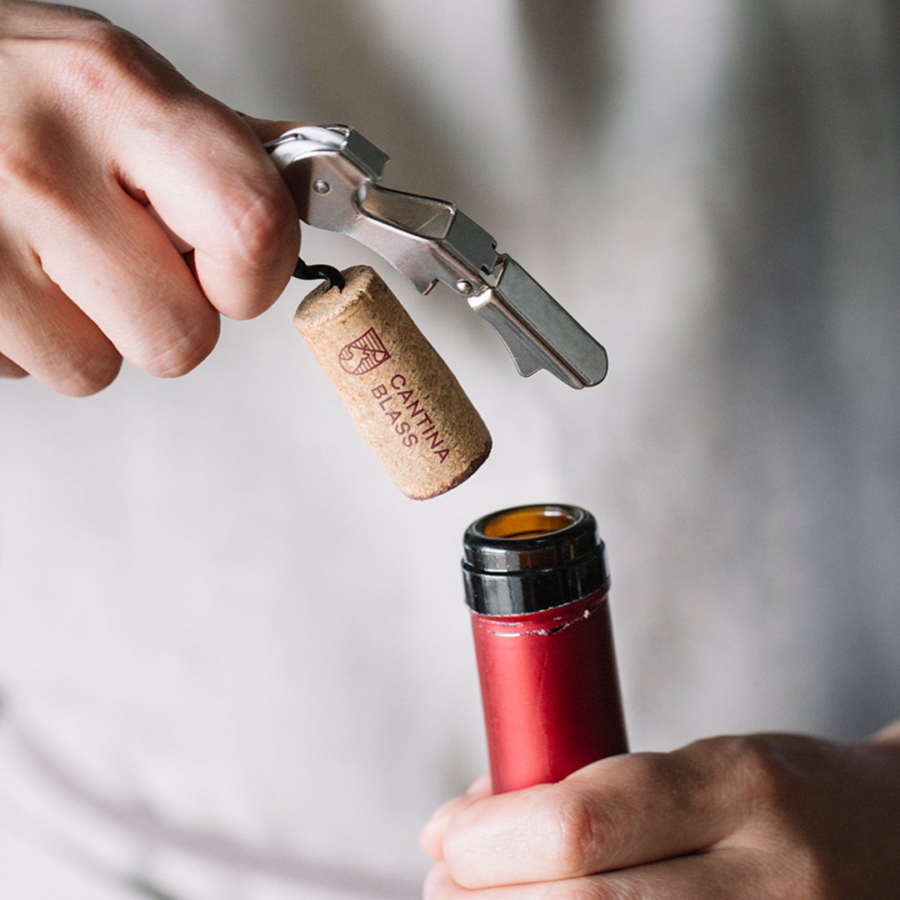
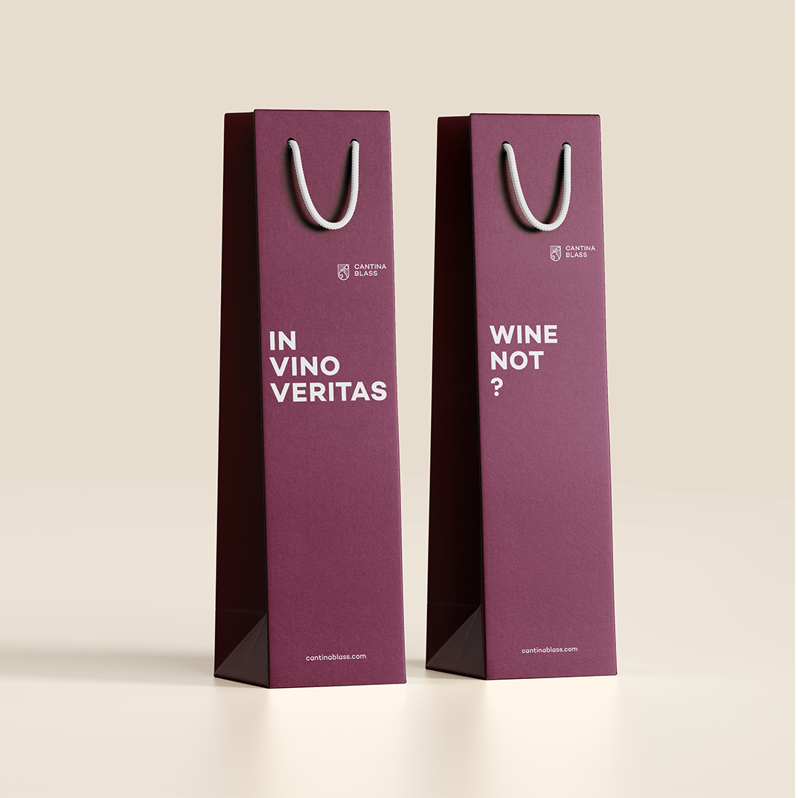
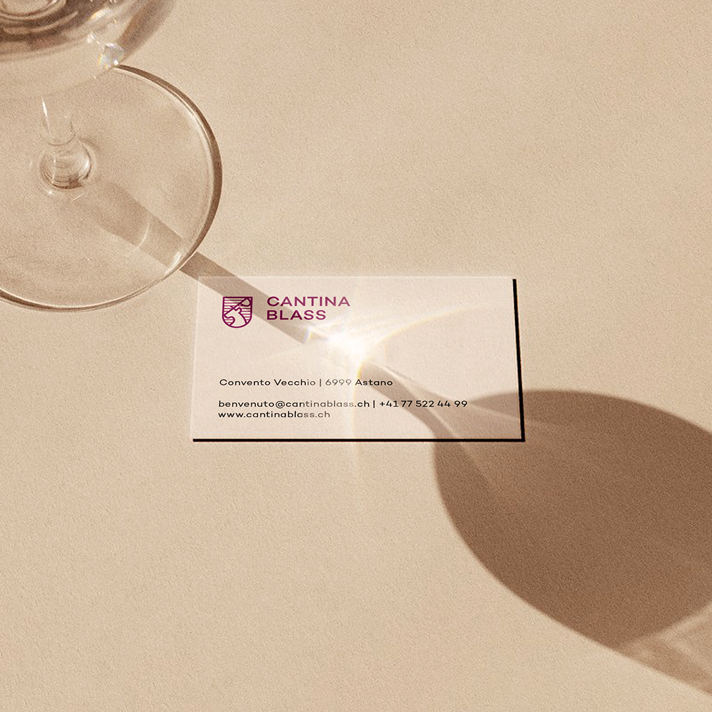
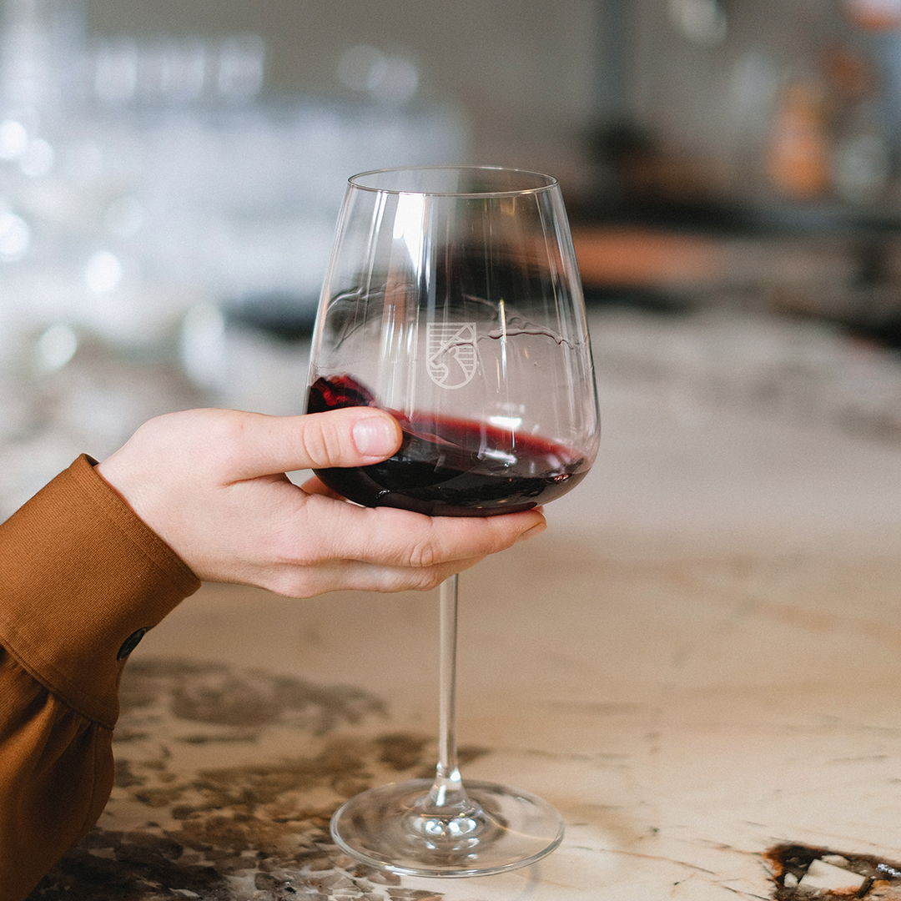
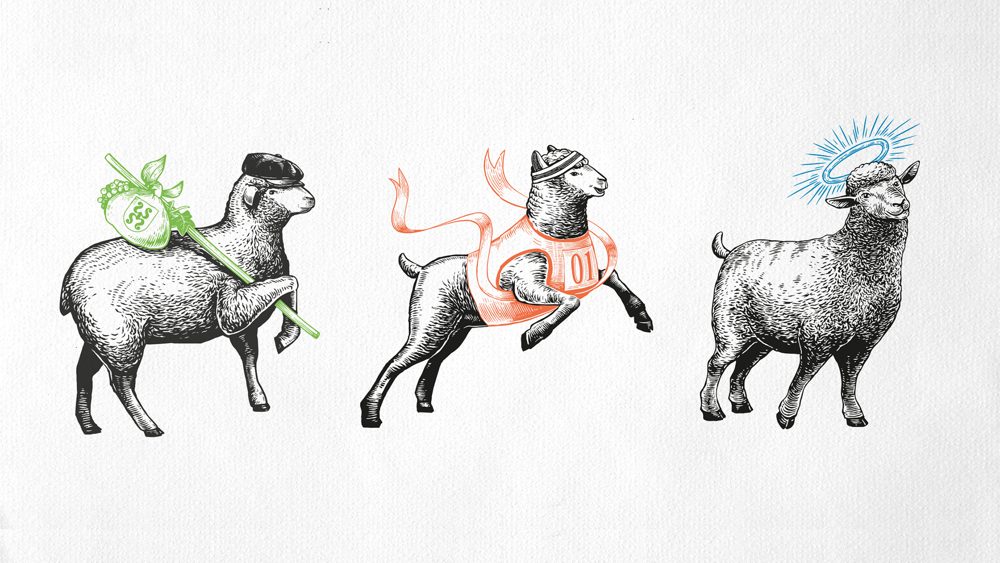

Gastronomie / Kultur · 2020
Cantina Blass
Ein Tessiner Weingut, das sich bewusst von traditionellen Weinbranchenbildern distanziert und stattdessen auf verspielten Charakter setzt. Die Branding-Lösung ersetzt klassische Embleme durch eine illustrative Interpretation. Ein Maskottchen-Charakter passt seine Persönlichkeit je nach Weinsorte an — von verspielt bis kühn — und verkörpert dabei die jeweiligen Geschmacksprofile. Jede Flasche ist ein Kapitel einer grösseren Markengeschichte.










